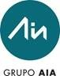
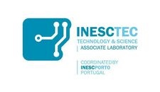
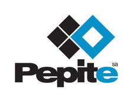
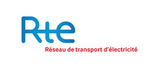

Welcome to the iPST - iTesla Power System Tools project.
The iPST project aims at developing of an open-source platform dedicated to large power grid security analysis. It is dedicated to :
- Power system simulations, be they static through Power Flows and Optimal Power Flows or dynamic through dynamic power system simulators.
- Power system data-mining thanks to big-data databases that allow storing time-series of power system related data.
Partners
The project is open-source and anybody is welcomed to contribute. The governance of the project whose goal is to set up the roadmap and decide the content of the official version is ensured by a board composed of the following members:
| AIA |  | Gladys Eliana Leon |
|---|---|---|
| Artelys | Pierre Girardeau | |
| Imperial College | Simon Tindemans | |
| INESCTEC |  | Helena Vasconcelos |
| KTH | Luigi Vanfretti | |
| Pepite |  | Philippe Mack |
| RSE | Diego Cirio | |
| RTE |  | Nicolas Omont |
| TechRain | Christian Biasuzzi | |
| Tractebel Engie | François-Xavier Bouchez |
Roadmap
The development roadmap for 2016-2017 is described in this presentation:

The document details the following aspects:
- Partners and organization
- Current state of the project: What is open-source, what is not.
- Future functional perimeter: New features in 2016-2017.
- Usability improvements: Decrease the learning curve.
- Communication
Documentation
Depending on you need, different documentation is available:
Support or Contact
Contact: Nicolas Omont
Support: github
Note: this website itself is open-source. You can contribute to it through the gh-pages branch of the iPST github.